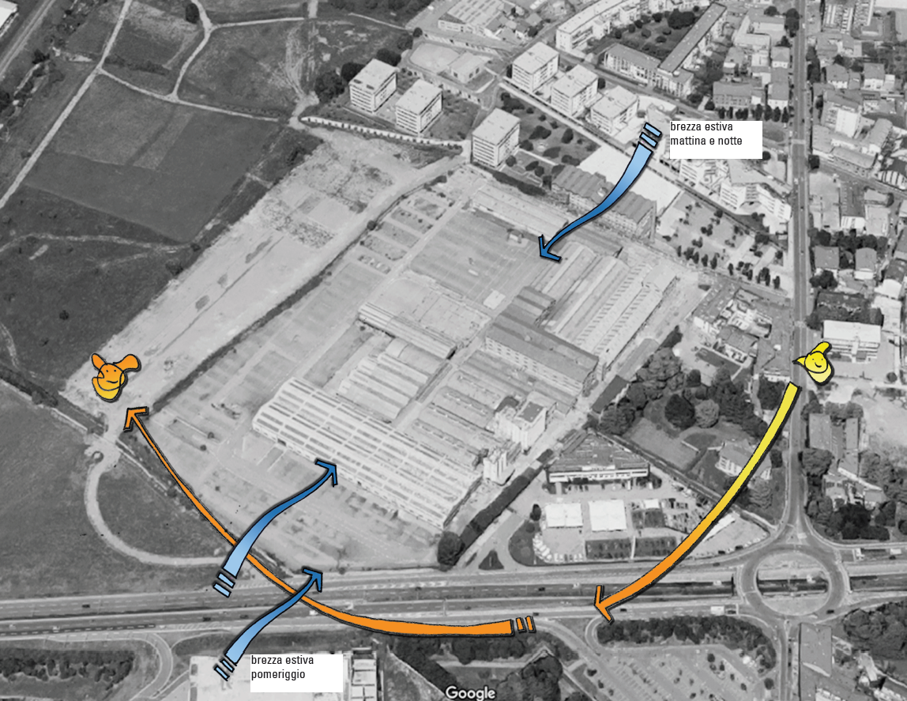
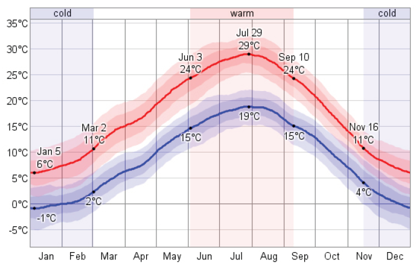
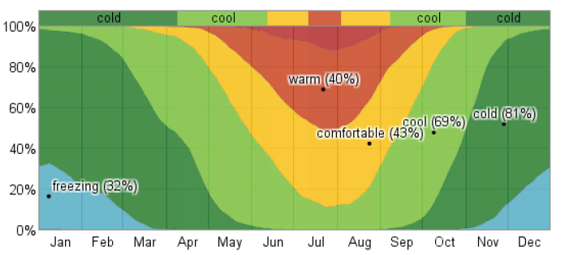
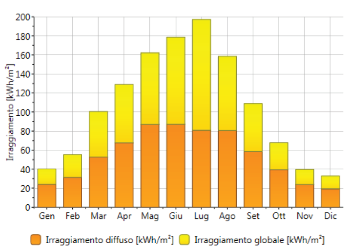
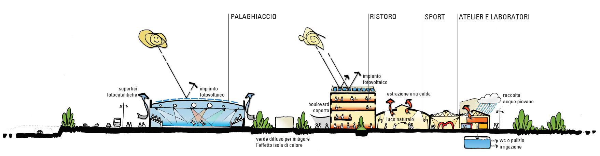

Futuro e sostenibilità sono due temi intimamente legati fra loro e non possono essere considerati separatamente, ma devono rientrare in una visione univoca e condivisa. Quale sarà il futuro di questa area? E la proposta progettuale come si confronta con i cambiamenti climatici, gli obiettivi di riduzione delle emissioni di CO2 e di consumo di suolo zero? A fronte di una totale artificializzazione del suolo, qual è oggi il potenziale ecologico dell’area di progetto? È possibile innescare un processo di rigenerazione ambientale che restituisca alla comunità e alla natura uno spazio vivibile e sano? Dopo decenni di attività industriale, che ha generato ricchezza economica a scapito dell'ambiente, è possibile invertire questa tendenza e promuovere un impatto ambientale positivo partendo dal recupero dell'area?
Queste sono solo alcune delle domande importanti alle quali bisogna dare una risposta concreta. Non si tratta solamente di sostituire tipologie edilizie con altre secondo un principio speculativo, ma è necessario un profondo ripensamento dei processi di riconversione delle aree dismesse in un'ottica di sostenibilità. Per rispondere a queste domande è riportata di seguito l'analisi di sito e i ragionamenti condotti per la definizione delle strategie di sostenibilità. Queste non rimandano solamente al tema della riduzione delle emissioni di CO2, ma ad una visione integrale, tesa a coniugare i temi sociali, economici ed ecologici:
- proponendo un mix funzionale che renda viva la struttura durante tutta la giornata e promuova il coinvolgimento della comunità;
- attraverso il riuso delle strutture esistenti con interventi minimi a garantire sicurezza e flessibilità e il recupero degli involucri quali buffer bioclimatici;
- promuovendo la rigenerazione ambientale degli spazi esterni per uno spazio sano e vivibile.

Per
la definizione delle strategia progettuali è importante innanzitutto
effettuare una valutazione del microclima locale (temperatura
dell'aria, soleggiamento e ventilazione) e delle caratteristiche di
sito. Durante l'anno, la temperatura dell'aria esterna oscilla
mediamente tra -1 e 29°C e raramente scende sotto i -5°C o supera i
32°C. Dall'analisi del diagramma delle temperature massime e minime
riportato di seguito, la stagione fredda dura circa 4 mesi (novembre –
febbraio), mentre la stagione calda 3 mesi e mezzo (giugno –
metà
settembre).

Temperature giornaliere massime e minime
Mettendo
in relazione le temperature dell'aria con i modelli di comfort, il
clima esterno viene percepito dal corpo umano nelle stagioni intermedie
in prevalenza fresco e/o confortevole, con l'eccezione di periodi di
caldo umido (in estate) e gelo (in inverno). Il soleggiamento
presenta un picco estivo che suggerisce lo sfruttamento della
radiazione solare per la produzione di energia rinnovabile. Nel periodo
invernale è prevalente la radiazione diffusa, con una forte riduzione
della componente diretta dovuta probabilmente alla nuvolosità del cielo
e alla presenza di banchi di nebbia.

Temperature dell'aria e comfort esterno
Temperature dell'aria e comfort esterno
Fonte dati
climatici:https://weatherspark.com/averages/32257/Bergamo-Lombardia-Italy

Irraggiamento
Irraggiamento
L'area
di progetto risulta debolmente ventilata durante il periodo invernale,
mentre nel periodo estivo durante le ore diurne una brezza leggera
proveniente dalle Alpi (direzione prevalente NW) o in alternativa dalla
pianura padana (SE) migliora la condizione di comfort nelle aree
esterne riducendo l'afa percepita dovuta ad un umidità dell'aria
superiore al 50%. La configurazione attuale dell'area di progetto,
totalmente impermeabilizzata e rivestita con materiali ad albedo
medio-elevato, e l'assenza di ventilazione promuove l’effetto "isola di calore" nelle aree esterne con una temperatura percepita superiore ai 40°C nel periodo estivo. Per
evitare tale surriscaldamento, promuovere un microclima confortevole e
porre le condizioni per la rigenerazione ambientale delle aree esterne,
il progetto è stato sviluppato secondo i principi di protezione dal
soleggiamento, ventilazione degli spazi esterni e inserimento di una
vegetazione diffusa.
stato di fatto, periodo estivo, ore di sole/giorno
ANALISI DEL SOLEGGIAMENTO
periodo estivo, ore di sole/giorno
temperatura dell'aria esterna 32°C
periodo estivo, ore di sole/giorno
temperatura dell'aria esterna 32°C
RIDURRE L'EFFETTO ISOLA DI CALORE

LE AREE ESTERNE
Obiettivo
del Masterplan è promuovere un impatto ambientale positivo, attraverso
la rigenerazione ambientale delle aree esterne e la creazione di un
ambiente sano e confortevole per l'uomo.
Rigenerazione ambientale
Il disegno generale del Masterplan è mirato a:
Nel progetto delle aree esterne una particolare attenzione è stata rivolta a ridurre il surriscaldamento delle aree esterne nel periodo estivo mediante:
Cibo a km 0
Il progetto prevede una serie di spazi da destinare a orti urbani e una serra per la produzione di frutta e verdura a km 0. Questa strategia contribuisce alla riappropriazione del territorio da parte della comunità, alla sua cura e alla creazione di microeconomie, nel rispetto della natura.
Recupero delle acque piovane
Come previsto per le preesistenze, si prevede il recupero delle acque piovane in copertura e dai piazzali da riutilizzari per l'irrigazione delle aree verdi, ristabilendo l'equilibrio idrologico dell'area di progetto. Per una maggiore efficienza nell'uso dell'acqua, si potrà valutare in una fase di approfondimento progettuale il riciclo delle acque di scarico mediante sistemi naturali quali le vasche di fitodepurazione per usi non potabili.
Rigenerazione ambientale
Il disegno generale del Masterplan è mirato a:
- riportare la vegetazione all'interno del lotto con la creazione di ampie superfici vegetali e la piantumazione di nuove essenze;
- ristabilire la permeabilità dei suoli (e quindi l'equilibrio idrologico dell'area) riducendo l'impronta del costruito sul lotto;
- rafforzare la cintura di aree verdi dei Corpi Santi a coronamento dell'area urbana di Bergamo e promuovere la formazione di corridoi ecologici.
Nel progetto delle aree esterne una particolare attenzione è stata rivolta a ridurre il surriscaldamento delle aree esterne nel periodo estivo mediante:
- il controllo del soleggiamento durante tutto l'anno con alberature caducifoglie e ampie coperture aggettanti;
- la ventilazione delle aree esterne nella stagione calda, orientando gli assi principali di attraversamento e gli spazi aperti secondo l'asse SW/NE dove soffiano le brezze dominanti nel periodo estivo e schermando dalle brezze invernali provenienti da Ovest;
- impiegando superfici di rivestimento di colore chiaro ad elevato albedo (riflessione dell’energia solare).
Meno CO2, più ossigeno
L'inserimento del verde contribuisce alla purificazione dell'aria, mediante il fissaggio degli inquinanti (ossidi di azoto e zolfo, monossido di carbonio e particolato, etc.) e la riduzione dei livelli di CO2 nell'area di progetto e in quelle limitrofe.
La purificazione naturale dell'aria avviene però solo durante la primavera e l'estate, lasciando al periodo invernale la crescita dei livelli di inquinamento. Per rafforzare l'obiettivo di rigenerazione ambientale e polmone verde, si suggerisce l'uso di materiali e superfici di rivestimento con proprietà fotocatalitiche. Questi materiali se esposti alla radiazione solare diretta attivano il principio fotocalitico, fissando gli inquinanti presenti nell'aria in qualsiasi periodo dell'anno. Questo consente di ridurre ulteriormente la concentrazione di sostanze nocive per la salute umana, migliorando la salubrità delle aree esterne e degli spazi circostanti.
L'inserimento del verde contribuisce alla purificazione dell'aria, mediante il fissaggio degli inquinanti (ossidi di azoto e zolfo, monossido di carbonio e particolato, etc.) e la riduzione dei livelli di CO2 nell'area di progetto e in quelle limitrofe.
La purificazione naturale dell'aria avviene però solo durante la primavera e l'estate, lasciando al periodo invernale la crescita dei livelli di inquinamento. Per rafforzare l'obiettivo di rigenerazione ambientale e polmone verde, si suggerisce l'uso di materiali e superfici di rivestimento con proprietà fotocatalitiche. Questi materiali se esposti alla radiazione solare diretta attivano il principio fotocalitico, fissando gli inquinanti presenti nell'aria in qualsiasi periodo dell'anno. Questo consente di ridurre ulteriormente la concentrazione di sostanze nocive per la salute umana, migliorando la salubrità delle aree esterne e degli spazi circostanti.
Cibo a km 0
Il progetto prevede una serie di spazi da destinare a orti urbani e una serra per la produzione di frutta e verdura a km 0. Questa strategia contribuisce alla riappropriazione del territorio da parte della comunità, alla sua cura e alla creazione di microeconomie, nel rispetto della natura.
Recupero delle acque piovane
Come previsto per le preesistenze, si prevede il recupero delle acque piovane in copertura e dai piazzali da riutilizzari per l'irrigazione delle aree verdi, ristabilendo l'equilibrio idrologico dell'area di progetto. Per una maggiore efficienza nell'uso dell'acqua, si potrà valutare in una fase di approfondimento progettuale il riciclo delle acque di scarico mediante sistemi naturali quali le vasche di fitodepurazione per usi non potabili.


LE PREESISTENZE
Nell'immaginario collettivo, l'area di progetto è percepita come una fabbrica, e questo aspetto non può essere dimenticato: per questo motivo si è deciso di mantenere il più possibile l'aspetto originario delle strutture e di intervenire senza stravolgere il carattere industriale del luogo che diventerà una grande piazza coperta per ospitare un mix di attività.
Riuso, riciclo e recupero delle strutture preesistenti
L'idea portante del progetto è il recupero delle strutture esistenti e degli involucri con interventi minimi per garantire sicurezza e flessibilità. Questo per preservare l'identità storica e al contempo garantire un livello minimo di comfort, senza dover ricorrere a sistemi impiantistici. L'involucro murario e le ampie superfici vetrate sono il primo moderatore bioclimatico del progetto, regolando in modo passivo l'illuminazione (durante tutto l'anno) e la ventilazione naturale (in particolare nella stagione calda) dello spazio interno. In secondo luogo, le masse murarie moderano il microclima interno (temperatura e umidità) grazie alla loro naturale capacità isolante e di attenuazione dei picchi di temperatura. La combinazione di questi sistemi passivi e naturali promuove all'interno delle preesistenze condizioni di temperatura intermedie tra l'ambiente esterno e gli spazi propriamente climatizzati.
Infrastruttura impiantistica
Oltre ai sistemi passivi si prevede un'infrastruttura impiantistica di base per garantire la massima flessibilità e adattabilità del programma funzionale nel rispetto delle preesistenze. Questa sarà composta da una piastra flottante a pavimento all'interno della quale impianti elettrici, meccanici e speciali trovano collocamento. La piastra permette di portare energia termica, frigorifera e forza motrice dove necessario, promuovendo una elevata flessibilità e trasformabilità nel tempo. Sulla piastra potranno essere integrate superfici radianti per creare isole comfortevoli e bolle microclimatiche (p.e. zone ristoro) per garantire condizioni di comfort solo ove richiesto. In secondo luogo, sarà possibile allacciare alla piastra box-container climatizzati per lo svolgimento di attività con particolari requisiti di comfort interno (p.e. atelier e laboratori).
Questa infrastruttura impiantistica permette di ridurre la domanda energetica dell'edificio:
Generatore di energia pulita
Gli accorgimenti utilizzati a livello di involucro e climatizzazione rendono sicuramente il complesso meno energivoro, ma per soddisfare gli obiettivi europei di energia pulita, si propone l'installazione in copertura di pannelli solari per la produzione di energia elettrica e termica a servizio degli edifici. Lo sviluppo orizzontale delle preesistenze e l'estesa superficie disponibile permette di installare un impianto di grandi dimensioni sufficiente a soddisfare in tempo reale la domanda di energia del complesso e a vendere alla rete l'eventuale surplus energetico, generando una microrendita utile a supportare la fattibilità economica dell'intervento.
Meno acqua dall'acquedotto
Le superfici di copertura riceve ogni anno una considerevole quantità di acqua piovana, che può essere agevolmente riutilizzata per usi non potabili (sciaquoni wc, pulizie e irrigazione) limitando sensibilmente il consumo di acqua potabile per il funzionamento dell'edificio.
Le serre e il mercato per produrre cibo a km0
Si prevede inoltre il rifacimento dell'involucro di una porzione delle preesistenze in serra bioclimatica per la produzione di frutta e verdura a km0.
Riuso, riciclo e recupero delle strutture preesistenti
L'idea portante del progetto è il recupero delle strutture esistenti e degli involucri con interventi minimi per garantire sicurezza e flessibilità. Questo per preservare l'identità storica e al contempo garantire un livello minimo di comfort, senza dover ricorrere a sistemi impiantistici. L'involucro murario e le ampie superfici vetrate sono il primo moderatore bioclimatico del progetto, regolando in modo passivo l'illuminazione (durante tutto l'anno) e la ventilazione naturale (in particolare nella stagione calda) dello spazio interno. In secondo luogo, le masse murarie moderano il microclima interno (temperatura e umidità) grazie alla loro naturale capacità isolante e di attenuazione dei picchi di temperatura. La combinazione di questi sistemi passivi e naturali promuove all'interno delle preesistenze condizioni di temperatura intermedie tra l'ambiente esterno e gli spazi propriamente climatizzati.
Infrastruttura impiantistica
Oltre ai sistemi passivi si prevede un'infrastruttura impiantistica di base per garantire la massima flessibilità e adattabilità del programma funzionale nel rispetto delle preesistenze. Questa sarà composta da una piastra flottante a pavimento all'interno della quale impianti elettrici, meccanici e speciali trovano collocamento. La piastra permette di portare energia termica, frigorifera e forza motrice dove necessario, promuovendo una elevata flessibilità e trasformabilità nel tempo. Sulla piastra potranno essere integrate superfici radianti per creare isole comfortevoli e bolle microclimatiche (p.e. zone ristoro) per garantire condizioni di comfort solo ove richiesto. In secondo luogo, sarà possibile allacciare alla piastra box-container climatizzati per lo svolgimento di attività con particolari requisiti di comfort interno (p.e. atelier e laboratori).
Questa infrastruttura impiantistica permette di ridurre la domanda energetica dell'edificio:
- sfruttando la capacità di mitigazione dell'involucro esistente che definisce uno spazio buffer tra gli ambienti riscaldati e l'esterno;
- delimitando gli spazi che richiedono un controllo preciso delle temperature e riducendo al minimo i volumi da climatizzare;
- garantendo condizioni ambientali differenziate in relazione alle destinazioni d'uso.
Generatore di energia pulita
Gli accorgimenti utilizzati a livello di involucro e climatizzazione rendono sicuramente il complesso meno energivoro, ma per soddisfare gli obiettivi europei di energia pulita, si propone l'installazione in copertura di pannelli solari per la produzione di energia elettrica e termica a servizio degli edifici. Lo sviluppo orizzontale delle preesistenze e l'estesa superficie disponibile permette di installare un impianto di grandi dimensioni sufficiente a soddisfare in tempo reale la domanda di energia del complesso e a vendere alla rete l'eventuale surplus energetico, generando una microrendita utile a supportare la fattibilità economica dell'intervento.
Meno acqua dall'acquedotto
Le superfici di copertura riceve ogni anno una considerevole quantità di acqua piovana, che può essere agevolmente riutilizzata per usi non potabili (sciaquoni wc, pulizie e irrigazione) limitando sensibilmente il consumo di acqua potabile per il funzionamento dell'edificio.
Le serre e il mercato per produrre cibo a km0
Si prevede inoltre il rifacimento dell'involucro di una porzione delle preesistenze in serra bioclimatica per la produzione di frutta e verdura a km0.
Mario Cucinella Architects,
proposta per il riuso dell’ex Area industriale Mirafiori a Torino. Scorcio
degli spazi interni e dei box climatizzati